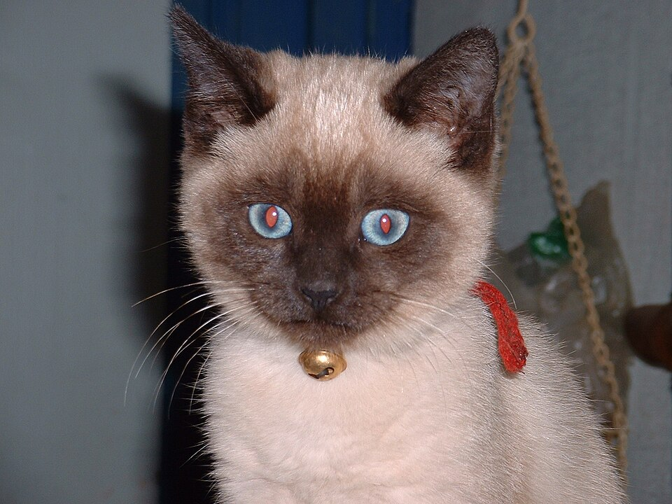
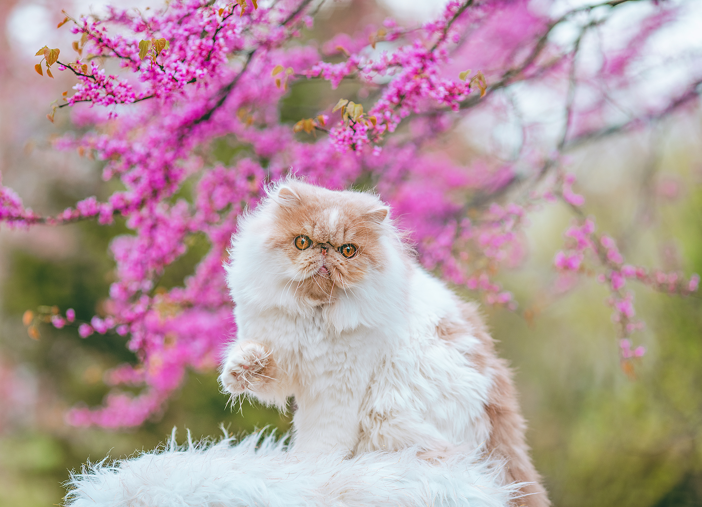

Welcome this site is about the main two cat body types, Cobby and Oriental!
The main two body types are Cobby cats and Oriental cats.
Cobby cats have short, compact, and commonly heavy-boned also known as muscular bodies. They have a deep chest,
short legs, and thick necks. Cobby cats have a more sturdy form in general, making them feel even solid when
held. But there are physical rules that cats have to meet to be fit in the cobby body type.
1. Broad body structure
2. Short, sturdy limbs
3. Round head and face
4. Thick tail
Yet, the body type does not only affect the overall physical side but also the personalities. Cobby cats are often labeled as friendly, affectoniate, and laid back. They love their independence while also loving cuddles. This fact makes them really calm and adaptable, the ideal pet for seniors and families. I learned that a good example of this type of cat is the persian breed.
Oriental Cats on the other hand are extremely elongated and lean, their bodies often have very slim, long tails. Their bodies are often seen as border line skinny. Oriental cats' ear's are extremely large, known for them being wider at the base; flared out, which brings out the wedge shape. Most commonly their eyes are seen as medium, almond-shaped, and generally green eyes. Many people refer to them as elegeant due to their body shape, being naturally long but also pleasantly muscled. Oriental cats coats have a sleek, painted on feel or longer silker fur. Their personalities are as outgoing and inviting as their unique colors. An example of this type of cat is the Modern Siamese, which has a triangle-like head shape common for the breed type!


“Women and cats will do as they please, and men and dogs should relax and get used to the idea.”Robert A. Heinlein
Some fun facts about cats(20 in total)!
{kind=link}
{kind=link}
{kind=link}